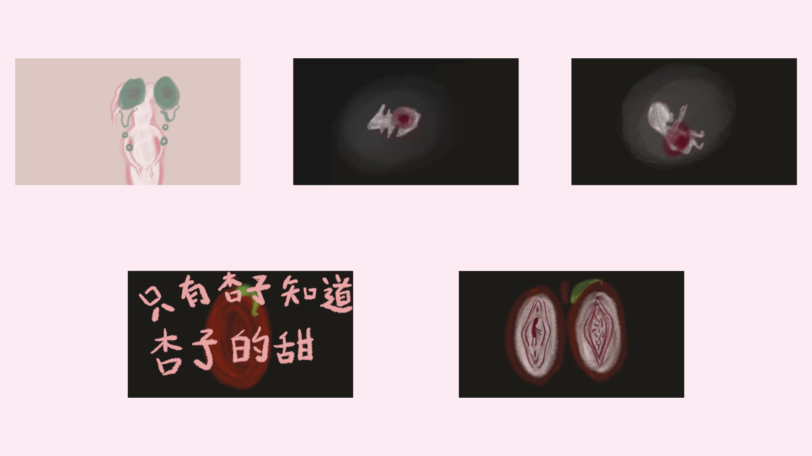

picnic finger
Digital
Stop Animation, 2022
“Picnic Fingers” is a stop-motion animation created using illustrations as the primary medium.
During production, editing software such as After Effects, Audition, and Premiere were used to blend hand-drawn illustrations with collected music. The animation tells a story about the cycle of life and death, exploring themes of rebirth and the continuity of life.
During production, editing software such as After Effects, Audition, and Premiere were used to blend hand-drawn illustrations with collected music. The animation tells a story about the cycle of life and death, exploring themes of rebirth and the continuity of life.
